Katalon Studio - Common steps
- From the main toolbar, click on Create new Test Case.Or, in the Tests Explorer panel, right-click on the Test Case folder and select New > Test Case.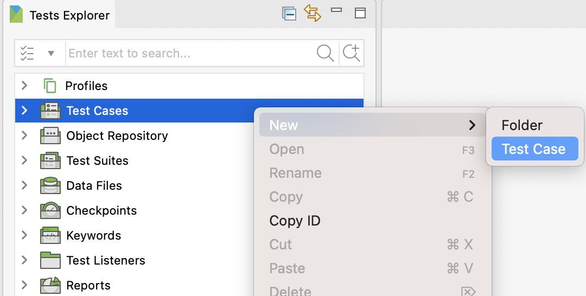Alternatively, you can also go to File > New > Test Case from the main menu.Tip:
For better management, you can also create a new folder by selecting Test Cases > New > Folder, then create new test cases inside that folder.
- Go to File > New > Project from the main menu.
- In the Tests Explorer panel, right-click on the Object Repository folder, then select New > Test Object.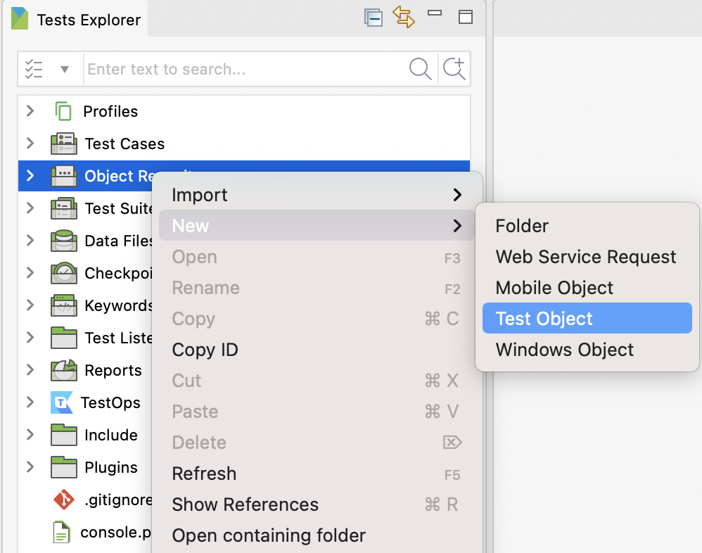Alternatively, you can also go to File > New > Test Object from the main menu.Tip:
For better management, you can also create a new folder by selecting Test Suites > New > Folder, then create new test suites inside that folder.
- Select File > Open Project from the main menu.
- In the Tests Explorer panel, right-click on the Test Suites folder > New > Test Suite.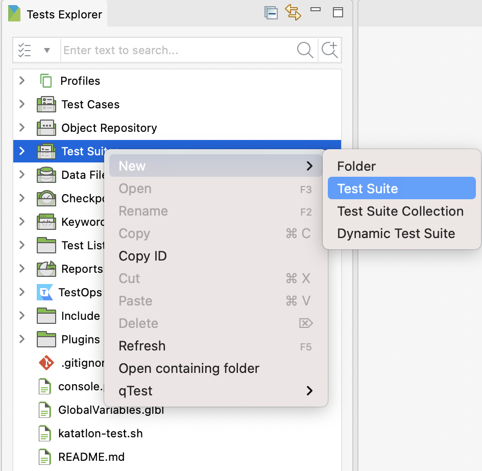Alternatively, you can also go to File > New > Test Suite from the main menu.
- In the Tests Explorer panel, right-click on the Test Suites folder > New > Test Suite Collection.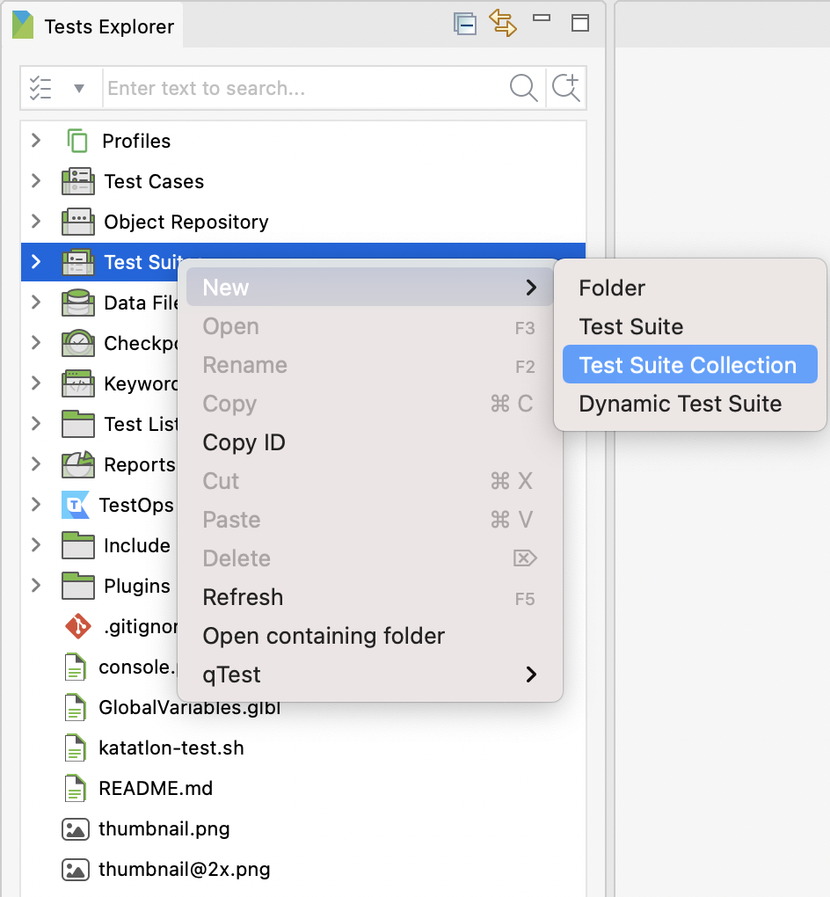Alternatively, you can also go to File > New > Test Suite Collection from the main menu.A New Test Suite Collection dialog appears.
- In the Tests Explorer panel, right-click at the Test Suites folder > New > Dynamic Test Suite.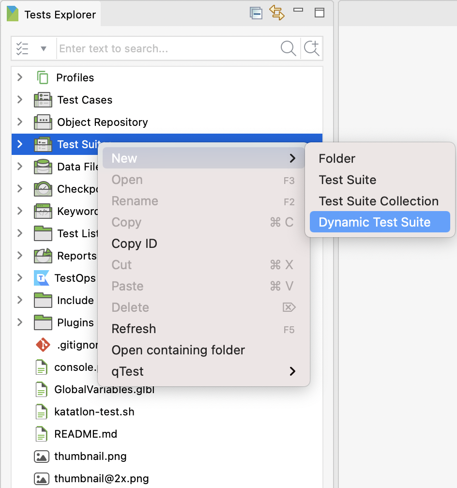
- In the Tests Explorer panel, right-click on the Object Repository folder, select New > Web Service Request.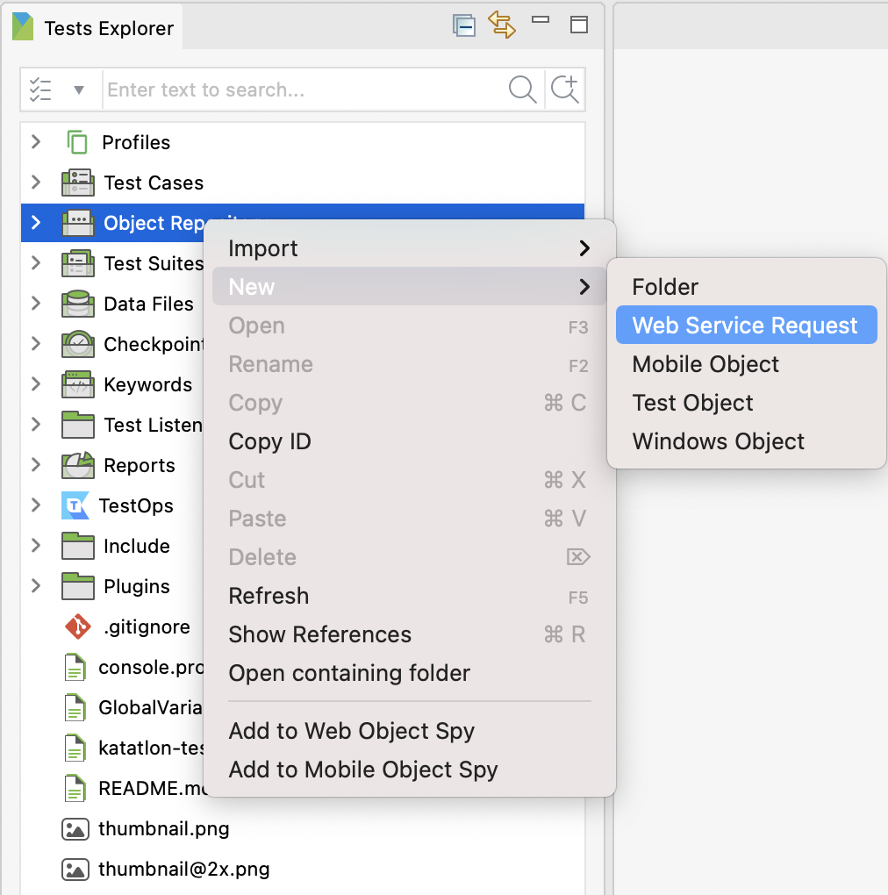Alternatively, you can also go to File > New > Web Service Request from the main menu.
- In the Tests Explorer panel, right-click on the Data Files folder > New > Test Data.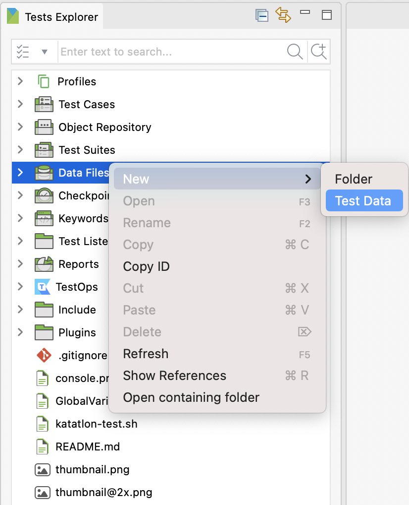Alternatively, you can also go to File > New > Test Data from the main menu.
- In the Tests Explorer panel, right-click on the Keywords folder > New > Package.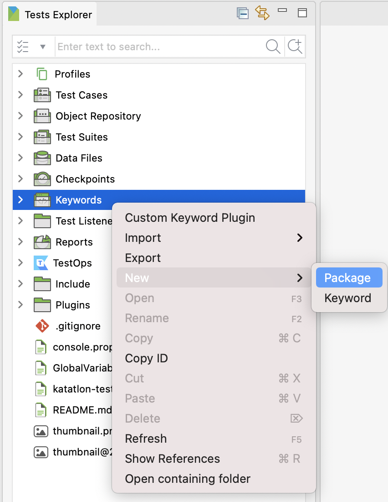Alternatively, you can also go to File > New > Package from the main menu.
- In the Tests Explorer panel, right-click on the Keywords folder > New > Keyword.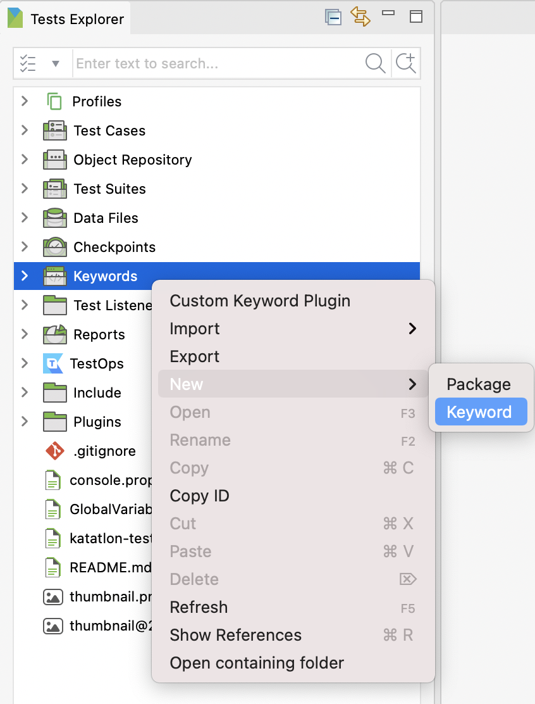
- Go to File > New > Groovy Script from the main menu.
- Go to File > New > BDD Feature File from the main menu.
- In the Tests Explorer panel, right-click on the Checkpoints > New > Checkpoint.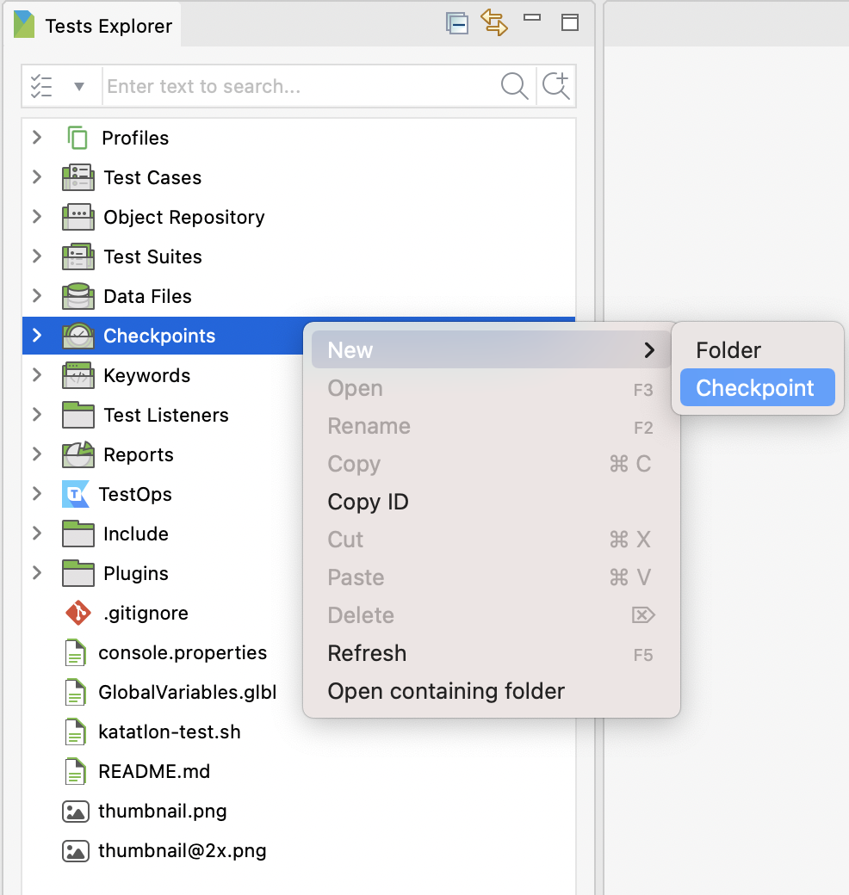Alternatively, you can go to File > New > Checkpoint from the main menu.
- In the Tests Explorer panel, right-click on Profiles. Select New > Execution Profile.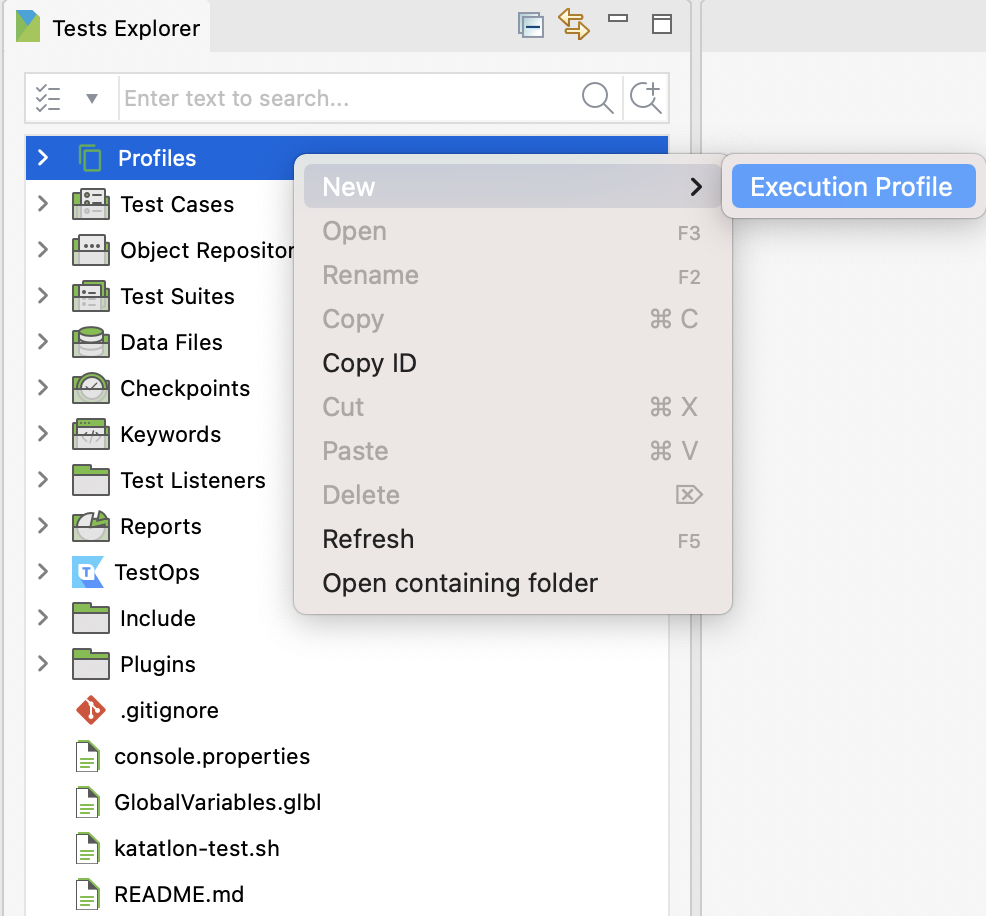
- In the Tests Explorer panel, right-click on Test Listeners. Select New > New Test Listener.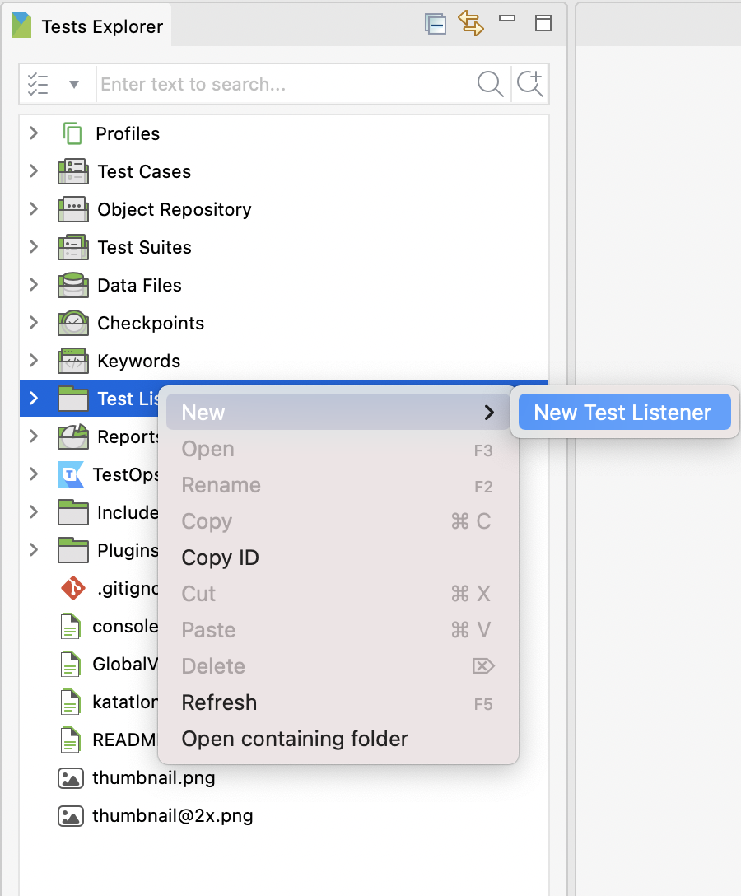
- Return to Katalon Studio and activate your plugin. To do so, click on the Profile icon, then click Reload Plugin. If you want to use the plugin in console mode, refer to this document: Use Plugins in Console Mode.
- Open a test suite. Click Add. A Test Case Browser opens. Choose one or more test cases you wish to add, then click OK.
- Open a test suite. Click Add. A Test Case Browser opens.
- Open a test suite collection. Click Add. A Test Suite Browser opens. Choose one or more test suites you wish to add, then click OK.
- Open a test suite collection. Click Add. ATest Suite Browser opens.
- To execute a test suite, from the main toolbar, click Run.
- To run a test suite collection, from the main toolbar, click Execute.
- To execute a dynamic test suite, from the main toolbar, click Run.
- To execute a test case, from the main toolbar, click Run.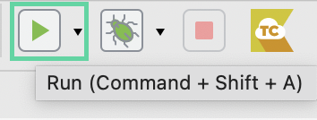
- From the main toolbar, click on Record Web to open the Web Recorder.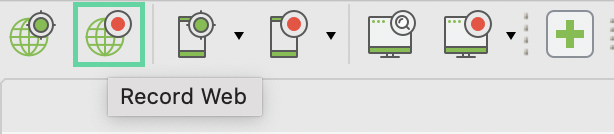The Web Recorder dialog appears.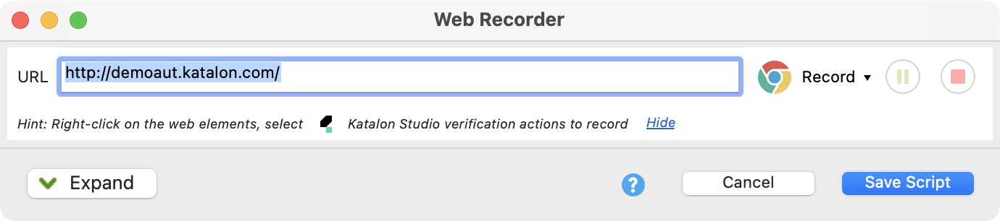
- On your macOS computer, locate to the folder containing Katalon Studio. Then right click at the Katalon Studio icon, select Show Package Contents.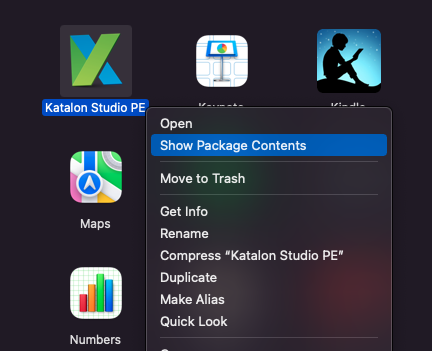Then open the folder Contents/ Eclipse, there you will find the katalon.ini file, open it in a text editor.On your Windows OS computer, open the folder containing Katalon Studio, there you will find the katalon.ini file, open it in a text editor.